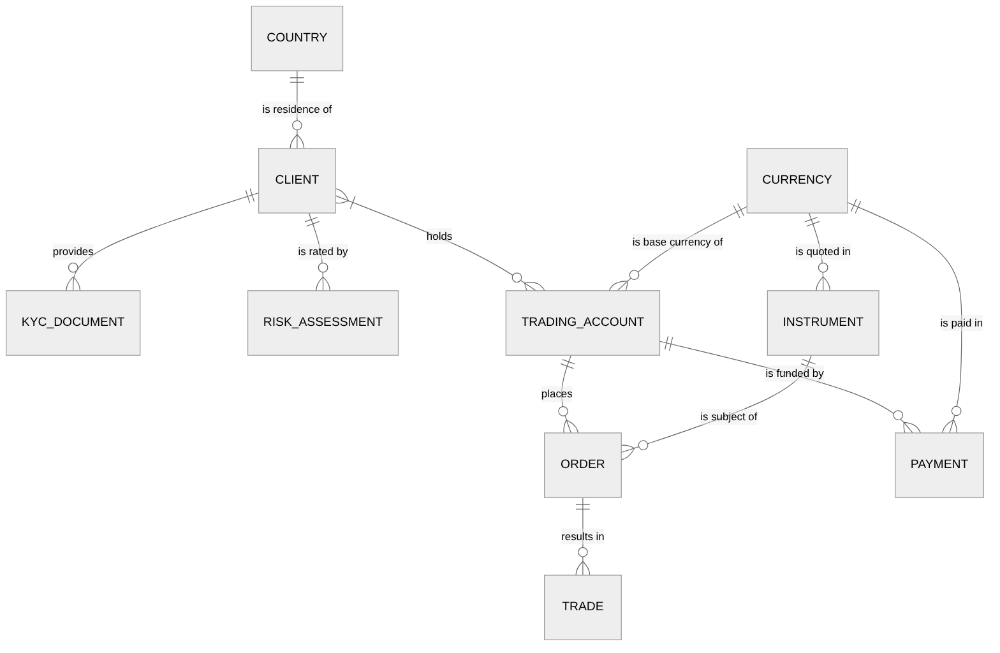
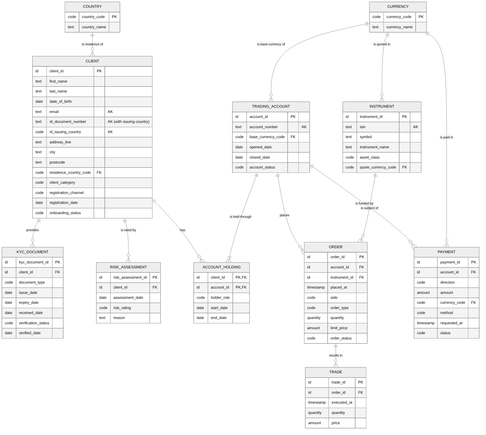

Part 2: Data model and database
One agreed model of Aspelia's clients, KYC evidence, accounts, payments, instruments, orders and trades, built from the business rules down to a working database.
1. Why a model first
Each of Aspelia's systems creates its own client identifier and stores client data its own way (Part 1). Before any data can be profiled, matched or reported on, the firm needs one agreed description of what its data is and how it fits together. This part targets two of the six problems:
| Problem | How the model addresses it |
|---|---|
| P1 Incomplete and inconsistent client data | KYC evidence is stored per document, with type, issue, expiry and verification dates, so missing or expired items can be measured. Countries and currencies come from governed code lists (ISO 3166, ISO 4217) instead of free text. |
| P2 Duplicate clients | One Client entity with a system-generated key, separate from the accounts the client holds. Email and ID document number are kept as alternate keys, the attributes later used to detect duplicates (Part 6). |
The model is built at the three levels of detail described in DAMA-DMBOK2: conceptual (the business entities and how they relate), logical (every attribute, key and allowed value, still independent of technology) and physical (the design for a specific database product).
2. Conceptual model
Ten entities, in scope as defined in the case brief: client, account, instrument, trade and payment data. Notation: Information Engineering (crow's foot). || means exactly one, o{ zero or many, }| one or many.

Business rules the relationships express
- Each Client must reside in exactly one Country; a Country may be the residence of many Clients.
- Each Client may provide zero, one or many KYC Documents; each KYC Document belongs to exactly one Client.
- Each Client may be rated by zero, one or many Risk Assessments; the client's current rating is the latest one.
- Each Client may hold zero, one or many Trading Accounts (a client can exist while onboarding, before any account is opened); each Trading Account is held by one or many Clients (joint accounts are allowed).
- Each Trading Account has exactly one base Currency.
- Each Trading Account may place zero, one or many Orders, and may be funded by zero, one or many Payments.
- Each Order is for exactly one Instrument, and may result in zero, one or many Trades (cancelled orders produce none; large orders can be filled in several parts). Each Trade comes from exactly one Order.
- Each Instrument is quoted in exactly one Currency; each Payment is made in exactly one Currency.
3. Logical model
The conceptual model extended with attributes, keys and domains, and normalized to third normal form (3NF): every attribute depends on the key, the whole key and nothing but the key. The many-to-many relationship between Client and Trading Account is resolved by the associative entity Account Holding.

Entities, keys and domains
| Entity | Primary key | Key attributes and domains |
|---|---|---|
| Country | Country Code (ISO 3166-1 alpha-2) | Country Name |
| Currency | Currency Code (ISO 4217) | Currency Name |
| Client | Client ID (surrogate) | Email (AK); ID Document Number + ID Issuing Country (AK); Date of Birth (valid past date); Residence Country Code (FK); Client Category: Retail, Professional; Registration Channel: Web, App; Onboarding Status: Pending, Approved, Rejected |
| KYC Document | KYC Document ID | Client ID (FK); Document Type: Identity, Proof of Address, Source of Funds; Issue, Expiry, Received and Verified Dates; Verification Status: Pending, Verified, Rejected |
| Risk Assessment | Risk Assessment ID | Client ID (FK); Assessment Date; Risk Rating: Low, Medium, High; Reason |
| Trading Account | Account ID (surrogate) | Account Number (AK); Base Currency Code (FK); Opened and Closed Dates; Account Status: Open, Suspended, Closed |
| Account Holding | Client ID + Account ID (both FK) | Holder Role: Primary, Secondary; Start Date; End Date |
| Payment | Payment ID | Account ID (FK); Direction: Deposit, Withdrawal; Amount (> 0); Currency Code (FK); Method: Card, Bank Transfer, E-wallet; Requested At; Status: Pending, Completed, Failed |
| Instrument | Instrument ID | ISIN (AK, shares and ETFs only); Symbol; Instrument Name; Asset Class: Share, ETF, CFD; Quote Currency Code (FK) |
| Order | Order ID | Account ID (FK); Instrument ID (FK); Placed At; Side: Buy, Sell; Order Type: Market, Limit; Quantity (> 0); Limit Price (Limit orders only); Order Status: Open, Partially Filled, Filled, Cancelled, Rejected |
| Trade | Trade ID | Order ID (FK); Executed At; Quantity (> 0); Price (> 0) |
Account Holding is the only dependent entity: its primary key is made up of the keys of its two parents, so both of its relationships are identifying.
4. Design decisions
| # | Decision | Alternative considered | Reason |
|---|---|---|---|
| D1 | Keep Order and Trade as separate entities. | Trade only. | An order is a request; a trade is an execution. Orders can be cancelled or rejected with no trade, or filled in several trades. |
| D2 | One Payment entity with a Direction attribute. | Separate Deposit and Withdrawal entities. | Both carry the same facts (amount, currency, method, status). One entity avoids a duplicated structure. |
| D3 | KYC Document as its own entity. | Document columns on Client. | A client has several documents, each with its own dates and status. Columns per document type would be a repeating group (not 1NF), and the CySEC findings concern exactly these per-document facts. |
| D4 | Risk Assessment as its own entity, keeping every rating. | A single risk rating on Client. | AML oversight needs to show which rating applied when, and why it changed. Keeping history is a business requirement, so it belongs in the logical model, not only in the physical design. |
| D5 | Country and Currency as governed code lists. | Free-text attributes. | Prevents “Germany”, “DE” and “Deutschland” for the same value (P1). |
| D6 | Joint accounts allowed, resolved through Account Holding (role, start and end dates). | One client per account. | A business choice. A many-to-many relationship cannot be stored directly, so an associative entity records each client–account pairing and facts about the holding itself. |
| D7 | A client may exist with no trading account. | Account required. | Clients register and go through KYC before an account is opened. |
| D8 | Payments linked to the Trading Account. | Payments linked to the Client. | Money moves in and out of a specific account; the client is reached through Account Holding. |
| D9 | Surrogate key for Client; email and ID document number as alternate keys. | Email or ID number as primary key. | Emails change, ID formats vary by country, and duplicates (P2) mean one person can appear with different emails. ISO codes are kept as keys for Country and Currency because they are stable, unique and maintained externally. |
| D10 | No Instrument Name or Client Country on Trade; no stored Balance or Position. | Copies for convenience. | 3NF: each fact lives once, with the entity it describes. Balance and Position can be derived from payments and trades. |
| D11 | Support tickets, campaigns and market prices excluded. | Include them. | Out of scope (Part 1, section 7). |
5. Next
Physical model and database: the logical model implemented in SQLite (tables, data types, constraints), followed by a synthetic data set with realistic quality defects for the data quality assessment in Part 3.